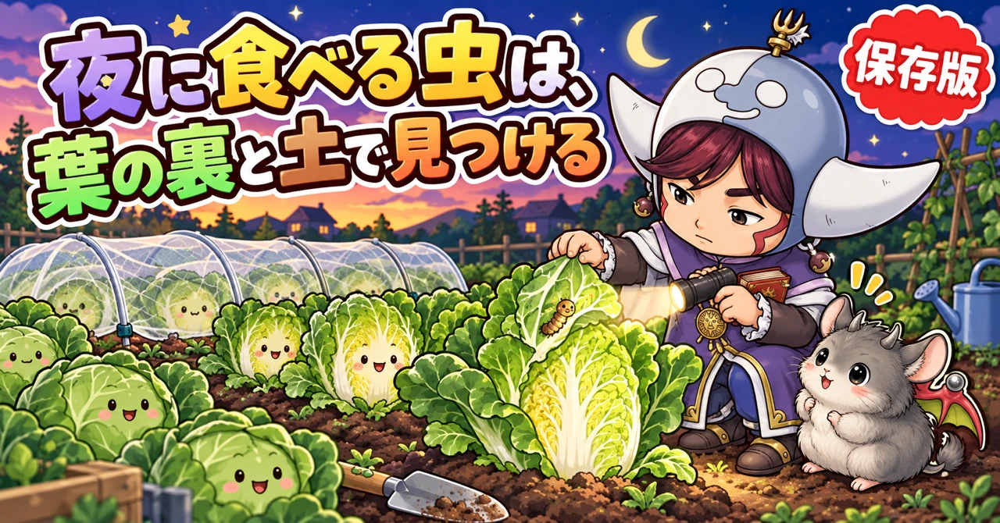
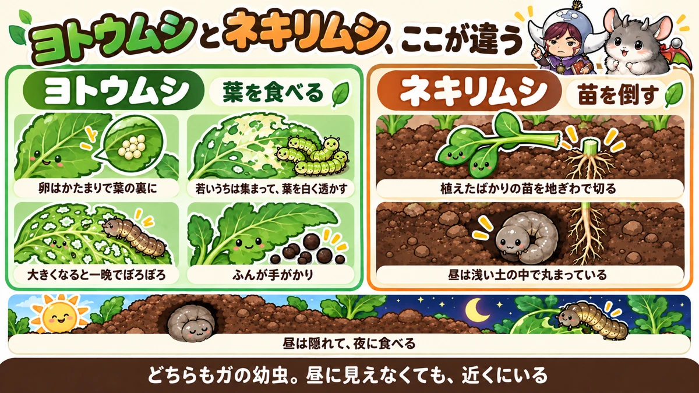
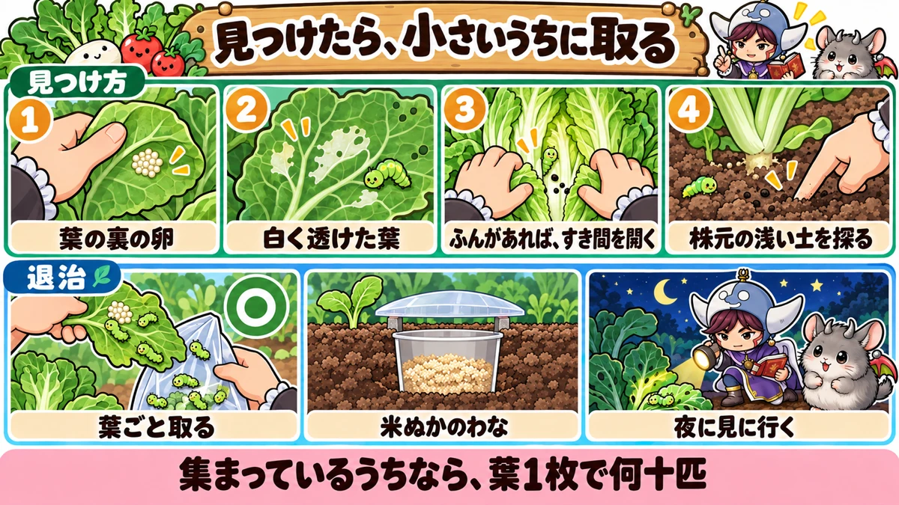
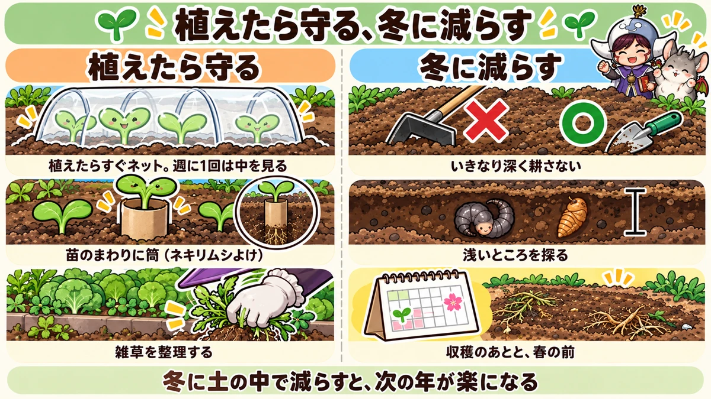

ヨトウムシとネキリムシ対策の決定版｜夜に食べる虫の見つけ方、薬を使わない退治、冬に減らすこつ

📖 この記事の目次
この記事で分かること
- ヨトウムシもネキリムシも、ガの幼虫です。昼は土の中や葉のすき間に隠れ、夜に出てきて食べます。
- ヨトウムシは、葉を食べる虫。小さいうちは葉の裏に集まって葉を白く透かし、大きくなると一晩で株をぼろぼろにします。
- ネキリムシは、植えたばかりの苗を、地ぎわでかじって倒す虫です。
- 見つけるこつは、「葉の裏の卵のかたまり」「白く透けた葉」「黒い粒のふん」「倒れた苗の根元の土」。
- 小さいうちに葉ごと取るのが、いちばん手間が少なくすみます。大きくなったものは、株元の土を浅く掘って探します。
- 予防は、植えたらすぐの防虫ネットと、苗のまわりに立てる筒。わなや、畑の外の雑草の整理も組み合わせます。
- 冬は土の中でさなぎになって越します。収穫のあとと春の前に土を探ると、次の年の数を減らせます。
朝、畑に来たら、昨日まで元気だった苗が根元からぱたりと倒れていた。白菜の葉が穴だらけなのに、いくら探しても虫が見つからない。家庭菜園をしていると、こんな経験をすることがあります。
そうした被害の多くは、夜に動く虫のしわざです。昼に見回っても姿が見えないので、何に食べられているのか分からず、対策が後手に回りがちです。この記事では、夜に食べる2つの虫、ヨトウムシとネキリムシについて、見分け方から、見つけ方、薬を使わない退治と予防、冬に数を減らすこつまで、順番に書いていきます。
早見：ヨトウムシとネキリムシの基本
2つの虫の違い
- ヨトウムシ：葉を食べる。若いうちは葉の裏に集団でいる。大きくなると昼は株元の土や葉のすき間に隠れ、夜に葉を食べる
- ネキリムシ：苗の茎を地ぎわで食べ、苗を倒す。昼は株元の浅い土の中に丸まっている
被害が多い時期（一般的な地域）
- ヨトウムシ：春（4〜6月ごろ）と秋（9〜11月ごろ）。特に秋、白菜やキャベツが巻きはじめるころ
- ネキリムシ：春に苗を植えたあと（4〜5月ごろ）と、秋に苗を植えたあと
見つける手がかり
- 葉の裏に、小さな粒がびっしり並んだ卵のかたまり
- 表の皮だけ残して、白く透けたように食べられた葉
- 葉の上やマルチの上の、黒や緑の小さな粒（ふん）
- 朝、根元から倒れたり、かじり切られたりした苗
やること
- 植えたらすぐ防虫ネット。すそは土で埋める
- 苗の茎のまわりに、筒を立てる（ネキリムシよけ）
- 卵や、集まっている若い幼虫は、葉ごと取る
- ふんがあるのに虫がいないときは、株元の土を浅く掘る
- 収穫のあとや冬に、土の浅いところのさなぎや幼虫を探す

ヨトウムシという虫
「夜に盗む虫」
ヨトウムシは、漢字で書くと「夜盗虫」です。昼は隠れていて、夜になると出てきて野菜を食べることから、この名前がつきました。
ヨトウムシと呼ばれるのは、いくつかのガの幼虫です。家庭菜園でよく出会うのは、次のような種類です。
- ヨトウガの幼虫
- ハスモンヨトウの幼虫
- シロイチモジヨトウの幼虫
種類によって、見た目や出やすい時期は少しずつ違いますが、「若いうちは葉の裏に集まる」「大きくなると隠れて夜に食べる」という性質は共通しています。対策も、ほぼ同じと考えてかまいません。
何でも食べる
ヨトウムシは、食べる野菜を選びません。白菜、キャベツ、ブロッコリー、大根などのアブラナの仲間を特に好みますが、レタス、ほうれん草、なす、ピーマン、豆の仲間、里芋など、ほとんどの野菜を食べます。
見た目
生まれたばかりの幼虫は、緑色で、とても小さく、青虫に似ています。大きくなるにつれて、茶色や黒っぽい色になり、大きいものは長さ3cmを超えます。ずんぐりとした、いも虫の姿です。土の色に紛れて、見つけにくくなります。
食べ方の変化
ヨトウムシの食べ方は、育つにつれて変わります。
- 卵：ガが、葉の裏に何十、何百という卵を、かたまりで産みつけます。粒がきれいに並んでいて、表面が毛でおおわれていることもあります。
- 生まれたばかり：卵のかたまりのまわりで、集団で、葉の裏の皮だけを残して食べます。そのため、葉の表から見ると、白く透けたような跡が広がります。
- 少し大きくなると：ばらばらに散らばって、葉に穴をあけて食べるようになります。
- 大きくなると：昼は株元の土の中や、葉の重なったすき間に隠れ、夜に出てきて、一晩で葉を食べつくすほどの量を食べます。葉のすじだけが残る、網のような食べ跡になります。
食べる量は、大きくなるほど急に増えます。だから、白く透けた葉を見つけた段階、つまりまだ集まっているうちに手を打つのが、いちばん少ない手間ですみます。
1年の過ごし方
ヨトウガは、土の中で、さなぎで冬を越します。春になると成虫のガになって飛び、野菜の葉に卵を産みます。そこから生まれた幼虫が、春の野菜を食べます。
夏の暑い時期は、また土の中でさなぎになって休み、秋の初めにガになって、再び卵を産みます。これが、秋冬野菜を食べる幼虫です。つまり、ヨトウガは、春と秋の年2回、幼虫が出てくることになります。
ハスモンヨトウは、夏の終わりから増えはじめ、秋に多くなります。暑くて雨の少ない夏のあとの秋は、特に多くなりやすいと言われています。
ネキリムシという虫
「根を切る虫」
ネキリムシは、カブラヤガなどのガの幼虫です。名前は「根切り虫」ですが、実際に食べるのは根ではなく、地ぎわの茎です。夜に土の中から出てきて、苗の茎を地面すれすれのところでかじり、苗を倒してしまいます。
ヨトウムシと同じく、黒っぽい、いも虫の姿をしています。さわると、くるりと丸まります。
植えたばかりの苗が狙われる
ネキリムシの被害が目立つのは、苗を植えたばかりの時期です。茎がまだ細くやわらかいので、一晩で何本も倒されることがあります。
朝、畑に来たら、苗が根元からぱたりと倒れていて、まわりに虫の姿がない。こんなときは、ほぼネキリムシと考えてよいでしょう。倒れた苗の根元を見ると、茎がかじり切られています。
茎が太くかたくなると、かじり切られることは少なくなります。ネキリムシ対策は、「植えてから茎がしっかりするまで」を守ることが中心になります。
卵は地ぎわに
ネキリムシの親のガは、雑草や作物の地ぎわの近くに、卵を1〜2個ずつ産むと言われています。ヨトウガのように、葉の裏に大きなかたまりで産むわけではないので、卵を見つけて取るのはむずかしい虫です。そのため、苗のまわりの雑草を整理したり、苗を物理的に守ったりする対策が中心になります。
見つけ方
1．葉の裏の卵のかたまり
ヨトウムシは、卵のうちに見つけられれば、いちばん楽です。秋冬野菜を植えたら、外側の葉を何枚か裏返して見てください。小さな粒がびっしりと並んだかたまりがあれば、ヨトウガの卵です。
卵のかたまりを見つけたら、その葉ごと摘み取り、袋に入れて片づけます。外側の葉なら、1枚取っても株への影響はほとんどありません。
2．白く透けた葉
葉の表から見て、白っぽく透けたような部分があれば、その裏に、生まれたばかりの幼虫が集まっています。裏返すと、小さな緑色の幼虫がたくさんいるはずです。
この段階なら、まだ集まっているので、その葉ごと取れば、一度にほとんどを退治できます。葉を折り取って、袋に入れるか、踏んでつぶします。
3．ふん
葉の上や、葉のつけ根、マルチの上に、黒や緑の小さな粒が落ちていたら、ヨトウムシなどのいも虫のふんです。ふんがあるのに虫の姿が見えない場合は、虫が近くに隠れています。
- 白菜やキャベツなら、葉と葉のすき間を、外から順に1枚ずつそっと開いて、奥まで見ます。巻きはじめた株では、まん中の若い葉の近くに入りこんでいることがあります。
- それでも見つからなければ、株元の土を見ます。
ふんは、ピンセットなどで取り除いておくと、次に新しいふんが落ちているかどうかで、まだ虫がいるかを判断できます。
4．株元の土を浅く掘る
大きくなったヨトウムシと、ネキリムシは、昼は株元の土の中に隠れています。といっても、深いところではなく、地表から数cmほどの、ごく浅いところです。
- 食べられた株や、倒れた苗のまわりの土を、指や移植ごてで、軽くほぐすように探ります。
- マルチを張っている場合は、植え穴のまわりの土を探ります。マルチの下にもぐりこんでいることもあります。
- 土と似た色をしているので、ゆっくり、少しずつ崩しながら見ます。
倒れた苗のすぐまわりを探すと、丸まった幼虫が見つかることがよくあります。1株倒されたら、近くの苗のまわりも探しておきます。一晩で何株も倒していくことがあるからです。
5．夜に見に行く
どうしても見つからないときは、暗くなってから懐中電灯を持って畑に行くと、葉の上に出てきて食べているところを見つけられることがあります。家の近くの畑やプランターなら、試してみる価値があります。
秋冬野菜の見回りの手順
秋に白菜やキャベツ、ブロッコリーを育てている畑なら、次の順番で見回ると、見落としが減ります。
1．防虫ネットをかけている場合は、片側のすそを開けます。全部はずす必要はありません。
2．まず、株全体を上から見て、穴や白く透けた葉、ふんがないかを確かめます。
3．外側の葉を何枚か、1枚ずつ裏返して、卵のかたまりや、集まっている若い幼虫がいないか見ます。
4．白菜やキャベツは、葉と葉のすき間を、外から内へ順に、そっと開いて見ていきます。葉を傷つけないよう、やさしく扱います。巻きはじめた株は、まん中の若い葉の近くまで見ます。
5．ふんがあるのに虫が見つからなければ、植え穴のまわりの土を、指で1cmほど軽くほぐして探します。
6．最後にネットのすそを戻し、土でしっかり埋めます。
秋冬野菜の植えつけから巻きはじめのころまでは、できれば週に2回、少なくとも週に1回は見回ります。
どの株から見るか
ヨトウムシの被害は、白菜やキャベツが巻きはじめるころに特に多くなります。株が大きくなると「もう虫に負けないだろう」と安心しがちですが、実はこの時期こそ念入りに見ます。ブロッコリーは、白菜やキャベツほどはつかない、という話もあります。

薬を使わない退治
卵と若い幼虫は、葉ごと取る
いちばん効くのは、卵のかたまりと、集まっている若い幼虫を、葉ごと取ることです。散らばる前なら、1枚の葉で何十匹も一度に取れます。取った葉は、畑に置かずに、袋に入れて片づけます。
見つけた幼虫は取る
大きくなった幼虫は、見つけしだい取ります。手で取るのが苦手なら、割りばしやピンセットを使います。
米ぬかのわな
ヨトウムシは、米ぬかのにおいに引き寄せられる、と言われています。これを使ったわなです。
1．紙コップなどに、米ぬかを入れます。
2．株元から10cmほど離れたところに穴を掘り、コップの口が地面（マルチ）と同じ高さになるように埋めます。
3．雨で米ぬかがぬれて腐らないよう、上に、少しすき間をあけてふたをかぶせます（弁当のふたなど）。
4．3〜4日ごとに中を見て、入りこんだ虫を取ります。
ペットボトルの横に、虫が入れるくらいの穴をあけて、米ぬかを入れて置く方法もあります。わなだけで全部を退治するのはむずかしいので、見回りといっしょに使います。
成虫のガを集めるわな
ヨトウガやカブラヤガの成虫が飛ぶ時期に、甘いにおいの液でガを集めるわなを仕掛ける人もいます。ペットボトルの側面に切りこみを入れて窓を作り、焼酎、酢、砂糖を混ぜた液を入れて、畑につるします。ガが液に引き寄せられて落ちる、という考え方です。
ガは、卵を産む前に捕まえられれば、そのぶん幼虫が減ります。ただ、効き目の感じ方は人によって違います。ネットや見回りの代わりにはならないので、おまけと考えてください。
市販の、微生物を使った薬
「化学的な薬は使いたくないが、手で取りきれない」という場合は、いも虫だけに効く、微生物由来の市販の薬もあります。有機栽培でも使えるものがあります。使う場合は、ラベルの野菜の名前と使い方を必ず確かめてください。どの薬も、虫が小さいうちのほうがよく効きます。
予防
防虫ネットは、植えたらすぐ
ヨトウムシの親のガは、外から飛んできて、葉に卵を産みます。苗を植えたらすぐに防虫ネットのトンネルをかけ、すそを土で埋めて、ガが入れないようにします。
ただし、次のようなことで、ネットの中に入りこむことがあります。
- 植えた苗の葉に、はじめから卵がついていた
- ネットのすそや、つなぎ目にすき間があった
- 土の中に、さなぎや幼虫がもともといた
特に、土の中にいたものは、ネットの中でガになって卵を産むこともあります。ネットをしていても、週に1回はすそを開けて、葉の裏を見てください。ネットをかける前に、苗の葉の裏と、植える場所の土を確かめておくと安心です。
ネットの目の選び方
ガは、アブラムシや小さな甲虫に比べると体が大きいので、ガだけを防ぐなら、それほど目の細かいネットでなくても入れません。ただ、秋冬野菜には、ハムシやアブラムシなど、もっと小さな虫もやってきます。いろいろな虫をまとめて防ぎたいなら、目の細かいネットを選びます。
目が細かいほど風通しは悪くなるので、まだ暑さの残る9月は、中が蒸れすぎないよう気をつけます。ネットは、株が大きくなっても葉がネットに触れないくらい、高さに余裕をもってかけます。葉がネットにくっついていると、外からガがネットごしに卵を産みつけることがあるからです。
苗のまわりに筒を立てる（ネキリムシよけ）
ネキリムシは、地面をはって苗の茎にたどりつき、かじります。そこで、苗の茎のまわりを、筒で囲って、近づけないようにします。
- トイレットペーパーの芯や、ペットボトルを輪切りにしたもの（高さ5cmほど）を、苗にかぶせるように置き、下を土に3cmほど埋めます。
- 太めのストローを3〜4cmに切り、縦に切りこみを入れて、苗の茎にはめ、少し土に差しこむ方法もあります。
ストローを深く差しこむと根を傷めるので、ごく浅くします。茎が太くなるまでの間、守っておきます。
卵の殻を細かく砕いて株元にまく、という方法もあります。とがった殻をいやがって寄りつかなくなる、という考え方です。
雑草を整理する
ネキリムシの親のガは、雑草の地ぎわに卵を産むことがあります。また、畑のまわりの雑草は、いろいろな虫の隠れ場所にもなります。苗を植える前に、植える場所とまわりの雑草を整理しておきます。
雑草を土にすきこむときは、ついている卵や幼虫もいっしょに土に混ぜてしまうことがあるので、抜いた雑草は畑の外に出すほうが安心です。
苗は、植える前に裏を見る
買ってきた苗の葉の裏に、卵や小さな幼虫がついていることがあります。植える前に、全部の葉の裏を見ておきます。
マリーゴールドを使う方法
マリーゴールドを畑に植えたり、刈り取ったマリーゴールドを通路の土に混ぜこんだりすると、土の中の虫が減った、という話もあります。はっきりした効き目が確かめられた方法ではありませんが、花も楽しめるので、試してみるのもよいでしょう。

天敵を味方にする
ヨトウムシやネキリムシにも、天敵がいます。いも虫を食べる鳥、クモ、カエル、幼虫の体に卵を産みつける小さなはちなどです。畑を耕しているときに、鳥がそばに降りてきて、掘り出された虫をついばんでいくこともあります。
強い薬をあちこちにかけると、こうした天敵も減ってしまいます。手で取る、わなを使う、ネットで守る、という方法を中心にすると、天敵もはたらきやすい畑になります。
収穫のあとと冬：土の中の虫を減らす
冬、虫はいなくなったわけではない
12月ごろになると、ヨトウムシの姿はぐっと見えなくなります。ただ、いなくなったわけではありません。ヨトウガは土の中でさなぎになって冬を越し、春になるとガになって出てきます。ネキリムシの仲間は、幼虫のまま土の中で冬を越すものもいます。
秋にたくさん被害が出た畑ほど、土の中で冬を越している虫も多いと考えられます。春に新しい苗を植える前に、この虫を減らしておくことが、翌年の被害を減らすいちばんの近道です。
収穫が終わったら、浅いところを探る
秋冬野菜の収穫が終わったら、すぐにくわで深く耕すのではなく、まず移植ごてで、表面から10〜15cmほどの土を、少しずつ探っていきます。くわで一気に耕すと、浅いところにいる幼虫やさなぎを、土の深くに埋めこんでしまうからです。
- マルチを張っていた場所は、マルチをはがして、その下を探ります。マルチの下は暖かく、虫が集まりやすい場所です。
- 被害が多かった株のまわりから探します。
- ヨトウガのさなぎは、茶色でかたい殻に包まれ、長さ2cmほどです。土の色に紛れているので、ゆっくり探します。
- 見つけた幼虫やさなぎは、取り除きます。
ビニールトンネルの下は、表面近くを
冬にビニールトンネルをかけている場所では、中が暖かいので、虫が表面近くにいることがあります。トンネルのない場所では、少し深いところまで探します。
寒さに当てる
空いた畑は、冬の寒いうちに、土を大きく掘り起こして、寒さに当てる方法もあります。土の中の虫が寒さにさらされたり、鳥に食べられたりします。
熱いお湯をかける方法
被害が多かった場所で、探しても見つからなかったときに、沸かしたお湯を土の表面にたっぷりかけて、浅いところの幼虫やさなぎを退治する、という方法もあります。
ただし、お湯がかかると、土の中の役に立つ生き物にも影響しますし、近くに植わっている野菜の根も傷みます。やけどの心配もあります。作物のない空いた場所で、まわりに気をつけて行ってください。
春の前にもう一度
春、夏野菜の苗を植える前に、もう一度土の浅いところを探っておくと、ネキリムシの被害が減ります。去年の秋に被害が多かった場所ほど、念入りに探します。
1年の流れと、その時期にやること
ヨトウムシとネキリムシの1年を、季節ごとに整理しておきます（一般的な地域の目安です）。
- 1〜2月：土の中で、さなぎや幼虫が冬を越している。空いた畑は土を掘り起こして寒さに当てる
- 3月：暖かくなる前に、マルチの下や土の浅いところを探り、さなぎや幼虫を取る。春の被害を減らす大事な時期
- 4〜5月：冬を越したガが飛び、卵を産む。夏野菜の苗を植えたら、ネットと筒で守る。ネキリムシの被害が多い時期
- 6月：春の幼虫が葉を食べる。葉の裏を見回る
- 7〜8月：ヨトウガは土の中でさなぎになって暑さをやりすごす。ハスモンヨトウは夏の終わりから増えはじめる
- 9〜10月：再びガが飛び、秋冬野菜に卵を産む。植えたらすぐネット。葉の裏の卵と白く透けた葉を探す。ハスモンヨトウは10月ごろにいちばん多くなる
- 11月：白菜やキャベツが巻きはじめる。葉のすき間とふんを念入りに見る
- 12月：幼虫の姿は見えにくくなる。収穫が終わった場所は、深く耕す前に浅いところを探る
春と秋の「ガが飛ぶ時期」と、冬から早春の「土の中にいる時期」。この2つの時期に手を打つと、1年の被害がぐっと減ります。
食べられたあとの手当て
成長点が無事なら、持ち直す
白菜やキャベツの外側の葉が穴だらけになっても、株のまん中の、新しい葉が出てくるところ（成長点）が食べられていなければ、そこから新しい葉が育って、持ち直すことが期待できます。虫を取り除いたら、そのまま育て続けてください。
成長点まで食べられてしまった株は、新しい葉が出てこなくなり、うまく育たないことがあります。巻く野菜なら、巻かなくなることもあります。
ぼろぼろの葉は取る
すじだけが残った、網のようになった葉は、もう光合成でほとんど役に立ちません。外側の葉なら、取ってしまってかまいません。葉の裏に、まだ卵や幼虫が残っていることもあるので、取った葉は畑の外へ片づけます。
倒された苗は、予備の苗で植え直す
ネキリムシに地ぎわでかじり切られた苗は、元には戻りません。植え直すしかないので、苗を植えるときは、何株か予備の苗を用意しておくと安心です。植え直すときは、先にまわりの土を探って虫を取り、新しい苗には筒をつけます。
ほかの虫との見分け方
葉に穴があいていても、犯人がヨトウムシとは限りません。秋冬野菜でよく見かける、ほかの虫の食べ方と比べておきます。
- 小さな丸い穴が、葉一面にぽつぽつあく：ノミのように跳ねる、小さな甲虫（キスジノミハムシなど）のことが多い
- 葉が網のようにされ、黒っぽい小さな幼虫と成虫がいる：ダイコンサルハムシのことがある。アブラナの仲間の雑草から来ることが多いので、うねのまわりの雑草を根から抜く
- 株のまん中の芯や成長点が食べられ、中にもぐりこんでいる：ハイマダラノメイガの幼虫（シンクイムシ）のことがある。芯をよく見る
- 昼も葉の上にいる、全身緑の幼虫：青虫（モンシロチョウの幼虫）
- 葉の裏が白く透け、裏に小さな幼虫が群れている：若いヨトウムシ
- 大きな穴、すじだけ残る、ふんが多いのに昼は姿がない：大きくなったヨトウムシ
犯人によって、見る場所や対策が少しずつ変わります。食べ跡の形と、虫がいる場所を手がかりに見分けてください。
野菜ごとの注意
白菜、キャベツ
葉が巻きはじめると、内側に入りこんだヨトウムシは、外からは見えなくなります。巻く前に、外側の葉の裏の卵と、透けた葉を見つけておくことが大切です。巻きはじめてからは、ふんを手がかりに、葉を1枚ずつ開いて探します。
ブロッコリー、大根、小松菜など
アブラナの仲間は、ヨトウムシが特に好む野菜です。防虫ネットを張り、葉の裏を見回ります。大根は、葉が地面近くに広がるので、株元の土もいっしょに探ります。
レタス
レタスは、ネキリムシに根元から切り倒されることがあります。倒れた株の葉をどけると、下に虫がいることもあります。
なす、ピーマン、トマトなど夏野菜の苗
植えつけ直後は、ネキリムシに注意します。苗のまわりに筒を立てて、茎が太くなるまで守ります。
豆の仲間
えだまめなどは、ヨトウムシの仲間に葉を食べられることがあります。白く透けた葉を見つけたら、葉ごと取ります。
里芋
ハスモンヨトウは、里芋の大きな葉によく卵を産みます。夏の終わりから秋に、里芋の葉が白く透けていたら、裏に若い幼虫が集まっているしるしです。葉が大きく、一度に何十匹もついていることがあるので、透けた部分を見つけたら、その葉ごと切り取って片づけます。里芋のそばに秋冬野菜を植えている場合は、里芋で増えた幼虫が移ってくることもあるので、両方を見回ります。
プランターの葉物
ベランダの小松菜やほうれん草なども、ガが飛んでくれば卵を産まれます。プランターは株が少ないぶん、1株の被害が目立ちます。目の細かい不織布や防虫ネットで、プランターごと覆っておくと安心です。食べ跡を見つけたら、土の表面を指でかき分けてみてください。畑より土が浅いので、隠れている虫を見つけやすいのがプランターの良いところです。
説明が分かれるところ
わなはどのくらい効くか
米ぬかのわなや、ガを集めるわなは、「かなり減った」という声がある一方、「あまり入らなかった」という声もあります。畑の広さやまわりの環境、虫の数によって、効き方はかなり違うようです。わなは見回りの助けと考え、わなだけに頼らないほうが安心です。
熱いお湯をかけるか
浅いところの虫を退治するのに効く、という考え方がある一方、土の中の役に立つ生き物まで減らしてしまう、という心配もあります。まず手で探して取る、お湯は被害がひどかった場所だけ、というふうに使い分けるのがよいでしょう。
大きな株なら、少し食べられても平気か
株が大きくなっていれば、多少葉を食べられても育ちには大きく響かない、という考え方もあります。ただ、ヨトウムシは大きくなるほど食べる量が急に増えるので、「少しだから」と見逃すと、数日で被害が大きくなることがあります。見つけた虫は取っておくのが無難です。
よくある失敗
昼に見回って「虫はいない」と判断した
ヨトウムシもネキリムシも、昼は隠れています。食べ跡やふんがあるなら、虫は近くにいます。葉のすき間と株元の土を探します。
ネットをかけて安心しきった
土の中にいた虫や、苗についていた卵から、ネットの中で増えることがあります。ネットの中も見回ります。
白く透けた葉を見逃した
白く透けた葉は、若い幼虫が集まっているしるしです。そこで葉ごと取れば一度ですみますが、見逃すと、散らばって、大きくなって、探すのが大変になります。
収穫のあと、すぐ深く耕した
浅いところにいる虫を深くに埋めてしまい、春に出てくることになります。まず浅いところを探ってから耕します。
倒れた苗だけ植え直した
倒れた苗のまわりには、まだ虫がいます。植え直す前に、まわりの土を探って虫を取り、新しい苗には筒をつけます。
よくある質問
青虫とヨトウムシはどう見分けますか
青虫（モンシロチョウの幼虫）は、昼も葉の上にいて、全身が緑色です。ヨトウムシは、若いうちは緑色で似ていますが、集団で葉の裏にいることが多く、大きくなると茶色や黒っぽくなって、昼は隠れます。対策は、どちらも防虫ネットと葉の裏の見回りが中心です。
プランターでも出ますか
出ます。ガは飛んでくるので、ベランダのプランターにも卵を産みます。プランターでは、土の表面を軽くほぐせば隠れている虫が見つかりやすいので、食べ跡があったら土を探ってみてください。
コガネムシの幼虫とは違いますか
コガネムシの幼虫は、白っぽく、体を半円のように丸めた姿で、土の中で根を食べます。ネキリムシは黒っぽく、夜に地上に出て茎をかじります。食べる場所が違うので、対策も少し違います。
倒れた苗のまわりを掘っても、虫が見つかりません
ネキリムシは、一晩のうちに何本かの苗を渡り歩くことがあります。倒れた苗のすぐ下にいなければ、となりの苗のまわりや、近くの雑草の根元を探してみてください。地表から数cmの浅いところに、丸まっていることが多いです。それでも見つからないときは、暗くなってから懐中電灯で見に行くと、出てきたところを見つけられることがあります。
毎年同じ場所で被害が出ます
土の中で冬を越した虫が、春にまた出てきている可能性があります。秋の収穫が終わったら、深く耕す前に浅いところを探る、春の植えつけ前にもう一度探る、の2回を続けてみてください。まわりの雑草が多い場合は、そちらも整理します。
食べられた白菜やキャベツは食べられますか
虫やふんを取り除いて、よく洗えば食べられます。食べられた外側の葉ははずし、内側を確かめて使います。
学ぶ：夜に食べる虫のしくみ🔬
なぜ、夜に食べるのか
いも虫は、体がやわらかく、動きもゆっくりです。昼の明るいうちに葉の上にいると、鳥や、はちなどの天敵に見つかりやすくなります。ヨトウムシやネキリムシが、昼は土の中や葉のすき間に隠れて、暗くなってから出てくるのは、天敵に見つかりにくくするためだと考えられています。
大きくなってから夜に動くようになるのも、体が大きく目立つようになるからです。小さいうちは葉の裏に集まっていても、大きくなると隠れる。育つにつれて、身の守り方を変えているのです。
なぜ、若いうちは集まっているのか
ガは、卵を1か所にまとめて産みます。生まれた幼虫は、まだ小さくてあごの力も弱いので、葉のやわらかい裏側の皮だけを食べ、その場で育ちます。少し大きくなると、えさを分け合うより散らばったほうが多く食べられるので、ばらばらに散っていきます。
人にとっては、この「集まっている時期」が、いちばん退治しやすい時期です。白く透けた葉を見逃さないことが、ヨトウムシ対策の要になる理由です。
なぜ、秋に多くなるのか
ヨトウムシの仲間には、1年に何回も世代をくり返すものがいます。ハスモンヨトウは、夏の終わりから世代を重ねるごとに数が増え、秋にいちばん多くなります。暑くて雨の少ない夏は、幼虫が育ちやすく、天敵の病気なども広がりにくいため、その年の秋に特に多くなりやすいと言われています。
秋冬野菜は、ちょうどこの「いちばん多い時期」に植えつけを迎えます。秋の苗をすぐにネットで守ることが大切なのは、このためです。
なぜ、さなぎで冬を越すのか
いも虫は、寒さの中では、食べることも動くこともできません。さなぎは、食べずに、じっと寒さに耐えられる姿です。土の中は、外の空気よりも温度の変化が小さく、乾きにくく、天敵にも見つかりにくい場所です。土の中でさなぎになるのは、冬を越すのにいちばん安全な方法なのです。
裏を返せば、冬の虫は、土の浅いところで動けずにいます。収穫のあとと春の前に土を探るのは、虫がいちばん無防備な時期を狙うことになります。
まとめ
ここまで読んでくださって、ありがとうございます！
ヨトウムシとネキリムシ対策のポイントを、もう一度まとめておきます。
- どちらもガの幼虫。昼は隠れて、夜に食べる
- ヨトウムシは葉を食べる。若いうちは葉の裏に集まり、葉を白く透かす。大きくなると一晩で株をぼろぼろに
- ネキリムシは植えたばかりの苗を地ぎわでかじって倒す
- 卵のかたまりと、白く透けた葉は、葉ごと取る。これがいちばん楽
- ふんや食べ跡があって虫が見えないときは、葉のすき間と株元の浅い土を探る
- 植えたらすぐ防虫ネット。苗の茎のまわりには筒。雑草を整理する
- 米ぬかのわなは、見回りの助けとして
- 白菜やキャベツは、巻きはじめのころが特に要注意
- 収穫のあとは、深く耕す前に浅いところを探る。冬と春の前に虫を減らすと、次の年が楽になる
- 食べられても成長点が無事なら持ち直す。倒された苗は、まわりの虫を取ってから予備の苗で植え直す
- 手を打つのは、春と秋のガが飛ぶ時期と、冬から早春の土の中にいる時期の2つ
夜に食べる虫は、姿が見えないぶん、やっかいに感じます。それでも、食べ跡とふんという手がかりは必ず残っています。まずは今度の見回りで、外側の葉を何枚か裏返して、卵のかたまりや白く透けた葉がないか、見てみてください🔦
防虫ネット
ガが卵を産みに来るのを防ぎます。植えたらすぐトンネルにして、すそは土で埋めます。


移植ごて
株元の浅い土や、収穫のあとのうねを、少しずつ探るのに使います。

米ぬか
紙コップに入れて株元近くに埋めると、ヨトウムシを集めるわなになります。
![[商品価格に関しましては、リンクが作成された時点と現時点で情報が変更されている場合がございます。]](https://hbb.afl.rakuten.co.jp/hgb/56d21cb1.eebb183f.56d21cb2.51de80a8/?me_id=1247635&item_id=10000021&pc=https%3A%2F%2Fthumbnail.image.rakuten.co.jp%2F%400_mall%2Feco-hiryo%2Fcabinet%2Fitem6%2Fset-1-a1.jpg%3F_ex%3D240x240&s=240x240&t=picttext "[商品価格に関しましては、リンクが作成された時点と現時点で情報が変更されている場合がございます。]")
あわせて読みたい


次に読む
記事一覧へ